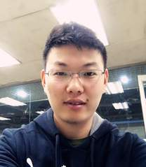

Education
| • 09/2005-07/2010 | Ph.D., Pattern Recognition and Intelligent System, University of Science and Technology of China (USTC) |
| • 09/2001-07/2005 | B.Eng., Automation, University of Science and Technology of China (USTC) |
[↑TOP]
Experience
| • 07/2017-now | Professor, Northwestern Polytechnical University, China |
| • 01/2014-06/2017 | Associate Professor, Northwestern Polytechnical University, China |
| • 10/2010-12/2013 | Post-doctor, Xi'an Institute of Optics and Precision Mechanics, Chinese Academy of Sciences, China |
[↑TOP]
Research Interests
Computer vision, pattern recognition, machine learning methods and their related applications particularly in video surveillance, intelligent transportation system, remote sensing and multimedia analysis.
[↑TOP]
Selected Journal Publications
[↑TOP]
Selected Conference Publications
[↑TOP]
Honors and Awards
| 2021 | Clarivate Highly Cited Researcher |
| 2021 | Elsevier Highly Cited Chinese Researcher |
| 2020 | Clarivate Highly Cited Researcher |
| 2020 | Elsevier Highly Cited Chinese Researcher |
| 2018 | Springer conference Best Student Paper Award |
| 2017 | IEEE T-GRS Best Reviewer |
| 2014 | IEEE conference Best Paper Award |
| 2014 | IEEE conference Honorable Mention Award |
[↑TOP]
Professional Activities
Editor Board:
Remote Sensing, Section Editor-in-Chief
IEEE Transactions on Geoscience and Remote Sensing, Associate Editor
IEEE Transactions on Circuits and Systems for Video Technology, Associate Editor
IEEE Transactions on Systems, Man, and Cybernetics: Systems, Associate Editor
IEEE Geoscience and Remote Sensing Letters, Associate Editor
Pattern Recognition, Associate Editor
Neurocomputing, Associate Editor
Neural Processing Letters, Associate Editor
Multimedia Tools and Applications, Editor Board Member
IET Image Processing, Associate Editor
IET Computer Vision, Associate Editor
IEEE Transactions on Industrial Electronics, Guest Editor
IEEE Transactions on Intelligent Transportation Systems, Lead Guest Editor
IEEE Journal of Selected Topics in Applied Earth Observations and Remote Sensing, Guest Editor
Journal of Image and Graphics (中国图象图形学报)，Editorial Board Member
Membership:
BCS Fellow
IET Fellow
IEEE Senior Member
ACM Senior Member
China Computer Federation (CCF) Senior Member
China Society of Image and Graphics (CSIG) Member
Vision And Learning Seminar (VALSE) Online Director Board Member
Program Committee Member (100+ times)：
NIPS, ICML, AAAI, IJCAI, CVPR, ICCV, ECCV, BMVC, ICASSP, ACM MM, ACPR...
General Chair：
• The 3rd International Electronic Conference on Remote Sensing
Organizing Committee Member：
• Annual Summit on Artificial Intelligence
Program Co-chair：
• 2015 International Conference on Progress in Informatics and Computing (PIC)
Session/Area Chair：
• 2019 AAAI Conference on Artificial Intelligence (AAAI)
• 2019 International Conference on Image and Graphics (ICIG)
• 2017 AAAI Conference on Artificial Intelligence (AAAI)
• 2017 International Joint Conference on Artificial Intelligence (IJCAI)
Regular Reviewer (40+ journals)：
IJCV, T-PAMI, IEEE T-IP, IEEE T-NNLS, IEEE T-CSVT, IEEE T-CYB, IEEE T-MM, IEEE T-MI, IEEE T-HMS, IEEE T-SMC:S, IEEE T-GRS, IEEE T-STSP, IEEE JSTARS, IEEE T-ITS, PR, CVIU...
[↑TOP]
Grants (20+)
• National Key R&D Program of China
• National Basic Research Program of China (973 Program)
• State Key Program of National Natural Science Foundation of China
• Major Research Plan of National Natural Science Foundation of China
• National Natural Science Foundation of China
• China Postdoctoral Science Foundation
• Natural Science Foundation Research Project of Shaanxi Province
• Open Research Fund of Chinese Academy of Sciences
Projects
My research projects mainly concentrate on three aspects.
| 1. | Vision functions for driver assistance systems and autonomous driving systems. Typical examples include: Lane Departure Warning, Traffic Sign Recognition, Pedestrian Collision Warning, Traffic Light Recognition, Driver Behavior Analysis, and Road Marking Detection and Recognition. |
• Intelligent Driving Systems [Demo Link1 Link2 ]

| 2. | Video surveillance, particularly for security and Intelligent Transportation Systems. Exemplar applications include: Crowd Analysis, Abnormal Detection, Target Tracking/Detection, Action Recognition, Saliency Detection/Image Resizing, Scene Understanding, etc. |
• Crowd Analysis/Abnormal Detection

• Traffic Congestion Calculation

• High Quality Video Resizing

• Licence Plate Recognition

• Scene Understanding

• Unconstrained Identity Verification

| 3. | Image processing, particularly for low level task. Typical examples include: image color correction, image super-resolution, image deblur, etc. |
• Color Correction for Stereo Images

• Image Super-Resolution

• Image Deblur

| 4. | Remote Sensing image analysis, especially for hyperspectral, multispectral and multimodal images. Research towards this direction includes image classification/segmentation/fusion, target detection, abnormal detection, band selection, etc. |

[↑TOP]
Graduates
|  Jianwu Fang, Ph.D Chang'an University, Associate Professor (长安大学) |
 Jianan Zhang, Ph.D Hisense (海信) |
 Mulin Chen, Ph.D Northwestern Polytechnical University, Associate Professor (西北工业大学) |
 Dong Wang, Ph.D Oregon State University, Post Doctor (俄勒冈州立大学) |
 Junyu Gao, Ph.D XIDIAN University, Post Doctor (西安电子科技大学) |
 Zhitong Xiong, Ph.D Technische Universität München, Post Doctor (慕尼黑工业大学) |
||
Jianzhe Lin, Master University of British Columbia (英属哥伦比亚大学) |
Jia Wan, Master City University of Hong Kong (香港城市大学) |
 Zequn Qin, Master Zhejiang University (浙江大学) |
 Zhaotie Meng, Master HIKVISION DIGITAL TECHNOLOGY (海康威视) |
Xingyu Zhang, Master Longfor Group (北京龙湖集团) |
Chunbiao Song, Master Huawei Technologies (华为) |
 Minyue Jiang, Master Baidu (百度) |
 Xiaoqiang Zhang, Master Baidu (百度) |
 Fukui Yang, Master Baidu (百度) |
 Quanquan Zheng, Master ZTE (中兴) |
Xiang He, Master Longfor Group (北京龙湖集团) |
Shaoteng Liu, Master Tencent (腾讯) |
 Haopeng Li, Master The University of Melbourne (墨尔本大学) |
 Lulu Hua, Master Huawei Technologies (华为) |
 Yuanrong Guo, Master Institute of Space Electronic Technology (航天九院) |
Fahong Zhang, Master Technische Universität München (慕尼黑工业大学) |
 Zhenghang Yuan, Master Technische Universität München (慕尼黑工业大学) |
 Cong Zhang, Master The Hong Kong Polytechnic University (香港理工大学) |
 Wei Lin, Master City University of Hong Kong (香港城市大学) |
 Wei Huang, Master Technische Universität München (慕尼黑工业大学) |
 Xueting Zhang, Master Technische Universität München (慕尼黑工业大学) |
 Yue Yuan, Master China Airborne Missile Academy (中国空空导弹研究院) |
Nianhui Guo, Master Hasso-Plattner-Institute (哈索.普拉特纳研究院) |
Sikai Bai, Master Technische Universität München (慕尼黑工业大学) |
Bo Wei, Master Alibaba Group (阿里巴巴集团控股有限公司) |
Xiaocheng Lu, Master Bytedance (字节跳动) |
Xu Jiang, Master The 14th Research Institute of CETC (中国电科第十四研究所) |
Tao Han, Master Shanghai Artificial Intelligence Laboratory (上海人工智能实验室) |
[↑TOP]